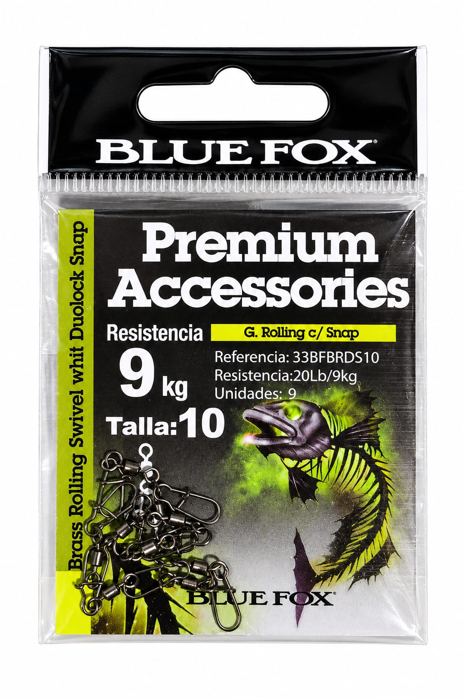

9kg
ESMERILLÓN GIRATORIO BLUE FOX CON SNAP DUOLOCK TALLA 10
$1.600
ESMERILLÓN GIRATORIO BLUE FOX CON SNAP DUOLOCK TALLA 10 – 9 UNIDADESEsmerillón giratorio con broche Duolock, diseñado para facilitar el cambio de señuelos y accesorios, ayudando además a reducir la torsión de la línea durante la pesca.CARACTERÍSTICASMarca: Blue FoxTipo: Esmerillón giratorio con Snap DuolockTalla: N.º 10Resistencia: 20 lb / 9 kgContenido9 unidadesCARACTERÍSTICASMaterial: Latón (Brass)Uso: Conexión de señuelos, líderes y accesorios de pescaUna alternativa práctica y resistente para realizar conexiones rápidas y seguras en distintos equipos de pesca.
MarcaBlue Fox
TipoEsmerillón giratorio con Snap Duolock
TallaN.º 10
Resistencia20 lb / 9 kg